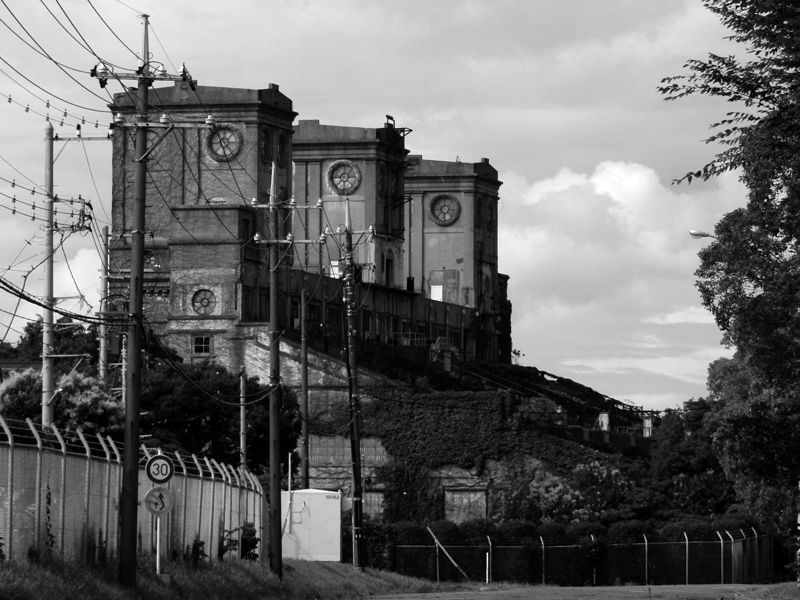
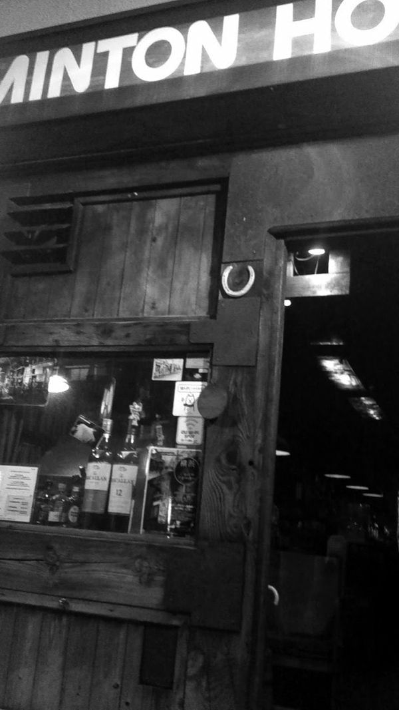

| DEEP in YOKOHAMA STORY: ~失われた街を生きた者たち | |
| BOB RODRIGUEZ FUJISAKI & 李淳馹 | |
| BOB ART DESIGN (2018) | |
LEE SUNiL

横浜の中区の南西と磯子区にまたがる根岸。そこはアンバランスで不思議な街だ。
そしていまだに横浜の戦後を象徴しているような街ともいえる。何故ならば、戦後の横浜を象徴していた本牧に広がっていた米軍住宅がとうの昔に返還されているというのに、横浜の一等地である根岸の丘の上一帯は今も米軍の『根岸住宅地区』として占領されたままだからだ。そこは戦後間もない１９４７年に陸軍工兵隊により住宅として建設され、後に海軍の管轄として主に軍の上位クラスの家族らの住居地区となった。張りめぐらされた金網の中には、まるで周辺の密集した日本人の住宅群と対比したかのように、広々とした青い芝に囲まれた総戸数３８５戸の家がぽつりぽつりと点在し、その一角をバスケットコートやテニスコートが占め、さらにはボーリング場のあるショッピングセンター、そして教会や小学校、診療所までが備えられている。低層の建物が緑の芝の合い間合い間に建てれている金網の中のその風景は、明らかに海の向こうのアメリカなのである。
一方で、そこからわずかに離れた先には地元で〝南京墓地〟と呼ばれる『地蔵王廟』が建つ。こちらはもともと明治期に横浜に住んでいた華僑たちが、いずれは死者の棺を故国に送ろうとそれまでの仮の埋葬地として建てられたものであったが、いつしか帰ることがかなわなかった人たちの永眠の地となってしまった。当時わざわざ中国本土から取り寄せたという貴重な資材をもって作られた建物のその佇まいは、目と鼻の先のアメリカとは明らかに異なった風景である。
不思議な佇まいは他にもある。その昔は長く続く砂浜だった海岸沿いが全て石油コンビナートに占拠されてしまった風景だ。人工的に作られたその景観は、横浜の根岸の現在を表わしている姿でもある。横浜と言えば海のイメージが付きまとい、本来、海と言えば砂浜や岸壁など自然の風景が伴うものだが、横浜の海に関してはこうした人工的な海岸線を思い浮かべる人が大多数であろう。実際、現在の横浜市に面した海岸線は埋立地を含め全て人工的に造成されたもので、砂浜は市の最南端の一か所にしか存在しない。しかも金沢区に作られたその砂浜もまた、後に人工的に作られたものなのである。
コンビナートが立ち並ぶ海を一望する根岸の丘からＪＲ根岸駅の方へ向って下る坂道の入り口には、デートスポットとしても有名な店がある。かつて有名ミュージシャンの歌にうたわれ、その店の窓から眺める海の景色と、歌にうたわれたソーダ水を目当てに客が押し寄せたと聞く。その店の窓から見える根岸湾はコンビナートに埋め尽くされ、港の夜景はあくまでも石油コンビナートが放つ灯にすぎない。しかも、今ではその店の海側にはいくつかのマンションが建ち並びその景観も大きく変わってしまった。
その窓から海を眺めながら飲むカクテルの味とはどんなものなのだろうか。少なくともフジサキを始め、彼の周りにいる横浜の友人たちは、誰一人としてその店には寄りつかないのでその味はわからない。
フジサキは戦後まもなく横浜で生まれた。後に世に言われる団塊の世代である。戦後間もない時代からアメリカの文化が津波のように押し寄せた街に生まれ育ったフジサキにとって、根岸とその周辺は思い出深く愛着のある空間だ。少年時代にはまだ砂浜だった本牧の海水浴場で泳ぎ、アメリカそのものと言える米軍施設を金網越しに眺めて育ったフジサキ。やがてオートバイに乗り始めた頃は海沿いの道から根岸の丘へと連なる坂道を何度も走った。
坂を上り切るとすぐに米軍施設専用の消防署が見える。そこには何台ものアメリカ製の大型消防車が並び、まるで映画の中のワンシーンのようでもある。その先が根岸森林公園。春ともなれば満開の桜を目当てに多くの花見客が訪れる広い公園だが、もとは幕末、まだ明治となる前の慶応の頃の１８６６年に日本初の西洋競馬の競馬場が作られた跡地だ。そのため、現在ではジョギングコースとしても使われる遊歩道は競馬場の走路に合わせるように楕円の形をしている。そのコースを見下ろすように今も残る『一等馬見所』は、関東大震災時に崩壊した建物に代わりアメリカ人の建築家の設計によって１９３０年に再建された。現在は閉鎖されたまま蔦に覆われながらも、３つのエレベーター塔を抱きながらその場に凛として立ち続ける姿は、不思議な根岸の街を醸し出す建造物のひとつである。
森林公園を越え、その先の商店街を過ぎると通りは山手本通りと呼ばれるカーブの続くバス通りとなる。右手に『山手カトリック教会』、左にかつての貿易商の邸宅を移築した『エリスマン邸』など、横浜開港以降の歴史が刻まれた建物などが並ぶ。さらに進んだ右手には、先の『一等馬見所』と同じ設計者による『横浜山手聖公会』が聳え立つ。
この教会はイングランドで生まれたキリスト教の一教派の教会だが、後に大きな火災に遭い内部をほぼ全焼してしまった。関東大震災で崩壊し再建、戦中の横浜大空襲時に半壊を経験していたが、その火事の原因は同教会の熱心な信者であるアメリカ人青年の手による放火という、まるで三島由紀夫の『金閣寺』を想起させるようなものだった。幸い建物の外形は大谷石を使った堅牢なものであったため全焼は免れ、内部の改修を経て昔の佇まいを残すことができた。山手本通りは『港の見える公園』で終わるが、その手前には『外人墓地』が広がっており、複数の教会と共に横浜に西洋の香りを漂わせている。
他にも通りの周辺には、フェリス女学院や横浜雙葉学園といったミッション系の女子校、そしてサンモール・インターナショナル・スクール、横浜インターナショナルスクールといったインターナショナルスクールなどが点在する。今では廃校となり大きなマンション群となってしまったが、１９０１年の開校以来多くの著名人を輩出したセント・ジョセフ・カレッジも山手本通り上の四叉路の信号の先にあった。そのセント・ジョセフの向かい側、山手本通りをはさんだ先にあるのが元町公園だ。こちらも桜の季節には花見客が多く訪れるが、隣接する外人墓地や港の見える公園と並んで年間を通して観光客が絶えない地でもある。
そしてその公園のど真ん中にありながら観光客がほとんど訪れない場所、地元の人間が〝モトプー〟と呼ぶ場所が元町公園プールだ。このプールは横浜市が運営する公営プールながら、子供たちが遊びまわる他の市営プールとは明らかに違った雰囲気を醸し出している。そもそもここで遊ぶ子供が少なく、代わりに本牧や山下町周辺の若者たちがたむろすることが多い。
モトプーは〝心臓麻痺のプール〟との異名があるように水がとても冷たい。水が冷たい理由は、プールの水に湧き水を利用しているからだと言われる。
幕末に来日しこの周辺の土地を手にいれたフランス人実業家がこの地にレンガ工場を作り、その後そこから出た湧き水を港に出入りする外国船に販売する事業を行なった。その水はインド洋まで行っても腐らず美味しく飲めるというほど上質の水だったという。
だが、関東大震災で工場は崩壊。その後横浜市によって同地が整備され、その際に作られたプールに湧き水が利用されたのである。プールが完成したのが1930年。その後しばらく湧き水が利用されていたが、現在では水道水を利用するため特に冷たいということはないはずだが、〝心臓麻痺のプール〟という子供には好まれそうにない異名だけはも残った。未だに水が冷たいと言われるのは、プールを取り囲むように育った元町公園の鬱蒼とした木々が夏の太陽の日差しを遮っているからなのかもしれない。
逸話は他にもある。かつてこのプールにはかつて高さ12
メートルを誇る立派な飛び込み台があったのだが、戦後のある日、アメリカの中年女性が一番上からのダイブに失敗し死亡するという事故が起きた。裂けた腹から内臓が飛び出し、プール一面を文字通り血の海にしたという噂話である。開設当時からあった飛び込み台が撤去されたのは１９６７年のことだった。しかも、ここのプールはまるで学校のプールのような面白みのない四角い50
メートルプールひとつだけである。子供たちにとっては決して魅力的なプールではないのだろう。
一方で、そのプールの周辺には観覧席のような階段状の広い休憩スペースがある。そのため、泳ぐというよりそこで涼むことを目的とする地元の若者が集まって来たのである。その階段席で若者たちが涼みながら時間を過ごし、中にはビールで喉を潤す者もいた。いや、ビールを飲むことを主な目的にした者が多くいたのであり、あるいはそこに集う近隣のインターナショナルスクールや女子大に通う若い女性たちのビキニ姿を目的にした者もいたはずだ。
他にも、横浜港で打ち上げられる花火をナイター営業時のプールから観戦したり、シーズンオフの際にはプールの場所に舞台を設置してジャズコンサートを開いたりと、いずれにせよ子供用のプールではなく、子供が憧れるような、あるいは恐れるような場、それがモトプーだった。
モトプーの入口からの坂を下りきったら様々な高級店の並ぶ元町商店街である。さらにその先の運河を渡れば中華街。その中華街のある山下町のはずれに『ミントンハウス』がある。
１９３８年。テナーサックス奏者のヘンリー・ミントンがニューヨークのハーレム地区に開いたジャズクラブバー、それが『ミントンズ・プレイハウス』。そこでは、後にジャズの歴史に名を刻むこととなるチャーリー・パーカー、セロニアス・モンク、ディジー・ガレスピーといったミュージシャンたちが夜ごと演奏を行なっていた。そんな伝説の名を冠した横浜のジャズ喫茶、それが『ミントンハウス』である。ただ、通いなれた客はフジサキをはじめみな単にミントンと呼んでいた。
入口のすぐ脇に並ぶ２台のターンテーブル。壁一面を埋め尽くした無数のＬＰレコード。一番奥の壁には大きな特製スピーカーが鎮座し、店内には常にジャズの音楽が流れている。小さな、しかし重厚な入り口以外窓のないそこは薄暗く、通りかかっただけでは店内に入ることが躊躇されるような店構えであった。だが、その店には近隣のインターナショナルスクールやフェリス出身の若い人たちが常に集まっており、彼ら、彼女らとモトプーに集まる若者たちと重なっていた。
そして店のもうひとつの客層を形成していたのが、その店のすぐそばにあったＭＣ（モーターサイクルクラブ）のメンバーたちだった。
そのＭＣとは、フジサキが17
歳のときのある出会いを機に１９６０年代に結成されていたクラブである。オートバイを所有するどころか、乗ることさえもごく限られた人々によってなされていた時代に生まれたクラブ。が、当初10
名ほどで結成されたＭＣも、時を経て、特に80
年代に入るとそのメンバーの数は徐々に増えていった。ミントンは、いわばそんなＭＣメンバーのたまり場になっていたのである。
その頃は、ＭＣの前にオートバイを止めミントンの重く大きな木の扉を押して中に入ると、コーヒー、あるいはビールを飲みながらジャズに耳を傾けているメンバーの誰かと会えた。彼らがビールを飲む時は、グラスを使わずにビールの小瓶をそのままラッパ飲みする。それはまるで瓶入りのコーラを飲むような姿であったが、オートバイで乗り付け、まるでコーラを飲むようにビールで喉を潤し、そしてまたオートバイに乗るというのは当時の彼らにとってはごく当たり前のことでもあった。
彼らに限らず、飲酒運転に関しての罰則が現在ほど厳しくないその時代は、飲んだ後に車を運転することは必ずしも珍しいことではなかった。特にクルマのドライバーに対する飲酒検問があってもオートバイのライダーが止められることはまずなかったし、ましてや昼間に検問をすることなどなかったため、飲んでまたオートバイに乗るというメンバーが多くいたのである。もちろん、それなりの酒の強さと運転の技量がある者に限られてはいたのだが。その後、飲酒運転に関する道路交通法が改正されたのが２００２年、さらに厳罰化されたのが２００９年からのことである。
強い陽射しの中をオートバイで走った後にモトプーで涼む。そして日が暮れかかってからミントンへと移動し、さらに喉を潤しながらひと時を過ごすというのは、その頃のＭＣメンバーの夏に日の過ごし方だった。そしてそれは、フジサキにとっても何度も重ねたお決まりのコースでもあった。
＊

そんなＭＣのメンバーの一人にイソロクという若者がいた。すでに30
歳を過ぎていたフジサキにとって、二十歳前のイソロクはまだまだ若く線の細い青年だったが、日本人離れしたその精悍な顔立ちは女にもてそうに見えた。
イソロクとはもちろんアダ名だ。それは祖父が開いた根岸の市設市場の魚屋の屋号『磯六』から来ている。その市場は米軍住宅のある根岸の丘のすぐ下、その名も坂下町という場所にあった。
市設市場とはその名の通り市が管理運営する複数の店舗が並ぶマーケットであり、横浜市内には他にも数か所あった。もとは、大正時代に勃発した第一次世界大戦以降の物価の高騰、特に米不足によって全国各地で起こっていた民衆による商店襲撃という暴動を抑制するため、横浜市が市内10
か所に『白米廉売所』を設けたことがその起源である。その後、１９２３年に起きた関東大震災後にも物資が不足したことを受け市内数か所に新たに開設されたが、根岸の市場はそのうちのひとつだった。市設市場は戦後の物資不足の際にも市民たちに重宝され、その後の高度成長期時代にも活況を見せている。
店は父親が継いでいたが、その父親はイソロクが中学生のときに亡くなっていた。以来、母親が親類と共に店を切り盛りし、イソロクが野球で少しは名の知れた横浜の私立の男子高を卒業した後、若旦那としてその店を継いだ。ちょうどその頃にフジサキたちのＭＣにやってきたのである。
80
年代。日本はオートバイブームだったといえる。特にサーキットを走るレーサーを模したレーサーレプリカと呼ばれるオートバイが多く生まれた。イソロクはそんな中で当時のレーサーレプリカの先駆けともいえるヤマハの２サイクルエンジンを積んだＲＺ２５０に乗っていた。
当時のフジサキの愛車は、同じヤマハでも１９７６年に発売された４サイクル短気筒オフロードモデルのＸＴ５００だった。単気筒ながら、１９７９年から始まったフランスのパリからアフリカ、セネガルのダカールまでを走る『パリ・ダカールラリー』では、第１回、第２回の優勝車両となる名車である。そのビッグシングルのエンジンは、後にヤマハの超ロングセラーモデルとなるＳＲの元となったものである。カフェレーサーやクラシカルモデルなどのカスタムバイクのベースとして知られるＳＲだが、そのエンジンは本来オフロード用だったのだ。
ＳＲもそうだが、ＸＴにもセルモーターはなく、始動のためには毎回キックでエンジンをかけなければならない。５００ccの単気筒エンジンをキックでかけるにはそれなりのテクニックと脚力が必要だが、フジサキは毎回器用に一発でエンジンをかけていた。
フジサキはそんなＸＴに荷物を積み、一人でよく遠出をした。主に釣りを目的とした林道の走りが多く、甲信越や東北まで足を伸ばしていた。フジサキが山中で行なう釣りはテンカラ釣りだ。テンカラ釣りとは、毛針を使い河川で行なう日本の伝統的な釣りで少々難しい釣り方でもある。しかも、釣り場は主に河川の上流である渓流だった。オフロード用のＸＴはそんな趣味を持つフジサキには欠かせないオートバイだったと言える。
遠出ができないときでもフジサキはＸＴを駆り横浜市内やその周辺を走り回った。市内では根岸の丘から山手本通り、その途中にある急カーブと急こう配からなる地蔵坂。あるいは直線の続く産業道路や本牧ふ頭のＡ突堤。そこへ向かう本牧十二天のＬ字クランクを通り、外国人船員の集うシーメンズクラブを横目に走るのもフジサキの好んだコースだった。横浜の街は、海沿いの平坦で直線の続く道から、丘に続く坂道やカーブなど変化にとんだ道にあふれていた。
他にも横浜から鎌倉へと向かう曲線のある朝比奈峠、あるいは長い直線の続くの横浜新道。横浜から少し先を目指してもオートバイで走るには良い道があった。中でも特に近場で好んでよく走ったのは横浜新道から国道１号線の戸塚までの間だった。
横浜新道とは、横浜市内を通る国道１号のバイパス道路のことである。市内の保土ヶ谷から戸塚までを結ぶ道路で、噂では湘南の大磯に住んでいた戦後の政治史に名を残す吉田茂のために作られたとも言うが、自動車専用道路として信号も無く続く10
キロほどの道はフジサキにとっとはその先の湘南に向かうにも恰好の道路だった。
フジサキはＸＴで走る上でのもうひとつの趣味を持っていた。はたしてそれは趣味と言えるかどうかはともかく、台風が来ると風雨の中をベルスタッフで完全武装して好んで遠出をしていたのである。ベルスタッフとは１９２４年にイギリスで誕生した防水衣類メーカーのことだ。防水素材がまだこの世に誕生する前、上質のエジプト綿にワックスを染み込ませることによって、綿の通気性を活かしつつ防水、防風に優れた衣料品を多く作っていた。それらの逸品はライダーはもとより船乗りや登山家たちにも愛されていたが、フジサキもそんなベルスタッフのウェアを好んで着用していた。その姿は革ジャンがほとんどだった他の若いライダーとは一線を画し、フジサキ独特のファンションセンスを表わしたものであった。
常にサーファーのように台風情報に耳を傾け、ベルスタッフを纏って台風を追うように長野まで走り、台風上陸中の湘南の海沿いの有料道路、西湘バイパスを走ったこともある。他にも雨に打たれながら水しぶきを上げ一人疾走したことは数え切れない。
そんな中、フジサキにとっては忘れられない台風の日がある。それは湘南に台風が上陸し、横浜を通過するというの日の夜のことだった。
その激しい雨の晩も、フジサキは横浜新道を通って湘南方面へ向おうと思い立ち家を出た。そして行きつけの山下町のミントンの前を通ると何人かのバイク仲間がいるのがわかった。そこでフジサキはミントンのドアを開け、「これからオートバイで湘南まで走るけど一緒にいくヤツはいるか？」と声をかけた。とはいえフジサキは、初めからこんな誘いには乗るやつなどいないと思っていた。誰かと一緒に走ろうというより、自分がこれから台風の中を走りに行くということを伝えればそれでよかった。なので一声かけただけで店を後にしようとしたのだが、そのとき店の奥に座っていた一番若いイソロクが突然立ち上がって言った。
「オレに一緒に行かせて下さい。すぐバイクをとってきますから！」
フジサキは「バカなやつもいるものだ」と思いながらも、慌てるように店を出ていったイソロクをミントンで他の仲間たちと待っことになった。そして、まもなくずぶ濡れでＲＺに乗って戻ってきたイソロクと湘南へと向かった。
ミントンを出発する際は、ＭＣの仲間たちが「事故るなよ、こんな雨ん中で」「無事帰るまでここで飲んで待ってるからよ」などと言って笑いながら送り出してくれた。
フジサキとイソロクは走り始めた。通る道は走り慣れた横浜新道である。雨風は走るほどに強くなり、横浜新道にさしかかったころには、そのあまりの風雨に走っているクルマはほとんど無く、代わりに路面にはまるで川のような水が流れていた。そんな中でフジサキのＸＴとイソロクのＲＺは水しぶきを上げながら走っていたが、しばらく走ると後ろのイソロクの姿が見えなくなった。豪雨の中、後ろのイソロクを確認するのは時よりバックミラーに写るＲＺのヘッドライトの光だけだ。が、いつの間にかその光が映らなくなっていたのだ。フジサキは仕方なくいったん路肩にオートバイを止め、イソロクが来るのを待っていた。するとほどなくして豪雨の中を一台のトラックが近づいてきて、フジサキの前で窓を開けて叫んだ。
「オタクの連れが後ろでひっくり返ってるぞ！ こんな雨ん中をムチャしてんじゃねえよー！」
そう言って走り去るトラックを見送り、フジサキは来た道をゆっくりと走りながら戻ることにした。すると１キロほど先の路肩にイソロクが座り込みブルブルと震えていた。幸いイソロクにたいした怪我はなかったが、ＲＺは走行不能だったため近くの公衆電話で山下町のＭＣに連絡をし、軽トラックでＲＺを引き取りに来てもらった。イソロクは軽トラックの助手席に乗り、フジサキはそのままＸＴで並走した。
その後フジサキとイソロクは山下町に戻りミントンで飲み始めたのだが、イソロクはそこでＭＣの他のメンバーから「だから言っただろ」とか「10
年早えんだよ！」などとからかわれ、かなりしょげてしまった。フジサキは「俺だって乗り始めの頃はコケてばかりいたんだから、あんまり気にするな」と言ってイソロクをなぐさめた。
だが、この夜の出来事以来フジサキは台風の日に人を誘うことはなく、豪雨の中を走るときは常に一人だった。
そんなイソロクだったが、彼は若くして魚屋としての包丁さばきを会得していた。
別の台風一過のある日のこと。フジサキと当時現役の警察官でもあったＭＣの仲間が工事中で立ち入り禁止の本牧埠頭の有刺鉄線をかいくぐり、白灯台で投網を打った。その頃のＭＣには現役警察官、白バイ隊員の他、教師や政治家から、元ヤクザ、日雇い労働者、あるいは学生運動の元活動家など様々な職業、階層の者が出入りしていた。いずれもがその職業や立場を超え、ただモーターサイクルという共通点だけをもって繋がり、理解し合っていた時代である。
台風後の増水で湾の水門のようになった灯台下は流れが激しく、短時間でいい型のスズキやフッコが何本も上った。フジサキたちはそれをミントンの隣りにあった顔見知りのカレー屋の調理場に持ち込んで、すぐにイソロクを呼んだ。イソロクは仲間の集まりなどに参加する際に「うちの店からです」と言って見事な刺身の盛り合わせを持参することが度々あったからだ。はたしてオートバイで駆け付けたイソロクは、その自慢の腕をふるって見事な洗いを造りあげた。
イソロクは、フジサキが川釣りをやると知ると一緒に行きたがった。釣りにも多少の自信があると言う。そこで春先のある日、イソロクのクルマにフジサキと他の仲間ふたりを加え長野の川へイワナを狙って釣りに出かけたことがある。だがその日は運が悪かったのか、あるいはその腕はたいしたことがなかったのか、イソロクだけは一匹も釣れなかった。
それでもイソロクが準備した人数分の折り詰め弁当はとても豪華で味もすばらしいものだった。春の暖かい陽射しの中、みなでその見事な弁当を食べている最中、イソロクは宙を舞う真っ黒なアゲハ蝶を見上げながら「まあ、こんな日もありますよね。運ですよ、運」と笑っていた。フジサキはそんなイソロクの屈託のない笑顔を見ながら、こういうところが周りの者に好かれるのだろうと思った。
80
年代の始めのその頃、フジサキたちはＭＣの仲間たちとノースピアの呼ばれる横浜港につきでた埠頭にあった店を借り切り、年に一度ずつ『ワン・ナイト・クラブ』と称したパーティーを開いていた。ノースピアとは横浜港の北に位置するためそう呼ばれるのだが、埠頭自体は西から東に延びており、しかも一本の橋だけで結ばれたその先の埠頭は米軍の施設のため、当時は一般人が橋に足を踏み入れることさえ禁止されていた。
その店はそんな橋の目前にあった。店の東はアメリカという立地。つまりアメリカの目線で日本を極東地域とするならば、アメリカの手前に当たり、それはまさに極東地の終着点となる。そのためその場をイーストエンドと呼ぶ者もいた。イーストエンドの一歩先はアメリカ。それも米軍の基地である。そして、その基地から向かうその先は戦地１９７９年を前後したベトナム戦争の頃は、この埠頭から多くの兵士や物資、武器が戦地に向かったという。日本を出て戦地へと向かう一歩手前の場。それがイーストエンドであり、当時はそんな兵士を相手にしたバーが数軒並んでいた。そこで最後の夜を仲間と共に、あるいは日本人女性と共に過ごしたアメリカ兵も多くいたことだろう。中には日本どころか、二度とアメリカにさえ戻ることのなかった兵士も多くいた。
そんなイーストエンドにある店内に酒や食べ物を持ち込んで行なわれるフジサキたちのパーティー。店内は古きアメリカを思わせるような造りになっており、カウンターの後ろには酒の陳列棚、奥には小さいながらも厨房もある。フジサキたちは自分たちが飲みたい酒、特に普通の店では飲めないようなオリジナルカクテルを作っては飲んだ。パーティーは会費制のため、先にその会費を払うとメンバーたちは好きな酒を好きなだけ飲むことができた。もちろん酒を出すのも料理を作るのも仲間たちである。フジサキはカウンターの中心に立ち、様々なお酒を仲間たちに飲ませていた。
特に仲間たちに好まれたのはフジサキが考案した〝イエローマン〟だった。ロックアイスを入れた大きめの12
オンスタンブラーに１オンス（30
?）のロンリコ１５１を入れ、グレープフルーツ１つをその場で絞って全て注ぐ。あとは軽くステアーするだけ。但し、ロンリコ１５１とはアルコール度数75
度以上というラム酒のため、酒が強い人でないととても飲み切れない。一方で、絞りたてのグレープフルーツの苦味が75
度の強烈さと調和、さらっとした飲み口となるため短時間で酔えるというカクテルでもあった。
後に横浜では、より小さなロックグラスに少量のロンリコと市販のグレープフルーツジュースを入れて作ったカクテルをイエローマンと称して出す店が現れてくるが、オリジナルはあくまでフジサキが考案した強烈なものである。ちなみに、イエローマンは外国人の多い横浜で日本人が考えたカクテルとしていつのまにか〝日本人〟の意味と捉えられていたが、フジサキはロンリコの原産地プエルトリコに近いカリブ海の国、ジャマイカのＤＪの名前から取っていた。そのイエローマンの由来は、彼が黒人でありながらアルビノのため肌が黄色く見えるためだった。もちろんカクテルのイエローマンも、グレープフルーツジュースの色、黄色である。
他にも癖の強いオールドジャマイカラムを牛乳で割って飲みやすくした〝ラムミルク〟、マラリアの特効薬だったというトリニダード・トバゴ産のリキュール、アンゴスチュラビターとロンドンジンを使った〝マラリア〟など、このパーティーのためにフジサキが考案したカクテルかいくつかあった。
仲間たちに次々と酒を出すそんなフジサキにとって、カウンターの中でサポートしてくれるイソロクは頼りになった。つまみの調理の他、頼まれた酒を手際よく出し、簡単なカクテルならば手際よく作った。この頃のイソロクは、出会った頃の痩せ気味でともすれば虚弱にも見えた体型から、逞しさを感じとれるような力強い体形となり、その男振りも目立ってきた。
カウンターの中で、真っ白なＴシャツの上にまだ新しいＭＣのデニムのベストを着用して働いたていたイソロク。ベストの背には、ＭＣの正規メンバーのみに与えられるマークが縫い付けられていた。ＭＣの名を表すロゴタイプとそれを意味するライダーのイラスト、そして地元横浜の文字がアルファベットで記された３点セットからなるそのマークは、フジサキ自身がＭＣ設立後にデザインしたものだ。ようやく一人前の正規のメンバーとして先輩たちに認められ、初めてその真新しいＭＣのメンバーの証を背負うことになったイソロクの姿は、まるで幼虫から立派なアゲハ蝶に脱皮した姿のようでもあった。そんな姿に何かを感じたのか、フジサキの知人で著名なフォトグラファーがローライの二眼レフを通してイソロクがカウンターの中で働く姿をフィルムに収めた。
それまでＲＺの２５０㏄
に乗っていたイソロクだが、ＭＣの中では一番先にその頃発売されたばかりのカタナに乗り換えた。カタナとはスズキが世界戦略のために開発した大型バイクのペットネームであり、正式な形式名はＧＳＸ―Ｓである。メーカーであるスズキが従来よりあったオートバイのデザインを海外の有名デザイナーに依頼。オートバイと言えば武骨で質実剛健が常であったのに対し、カタナは流れるような斬新なデザインで、文字通り空気を切り裂く刀のような見事なデザインに仕上がっていた。本来は１１００㏄
のエンジンを搭載するモデルであり、カタナの名を正式に冠することができたたのはこの輸出向けのモデルだけである。
１９８１年に発売された１１００㏄
のカタナは、逆輸入という形で日本で購入することも可能ではあったもの、関税等も含め80
年代のその当時、１台１５０万円以上というオートバイとしては破格の値段だった。
一方で、７５０㏄
のエンジンを搭載した廉価版の国内モデルも発売されていたが、こちらは当時の国内の保安基準によりオリジナルデザインのセパレートハンドルから不格好なアップハンドルに変更され、またカタナという名称を公式には使うことが許されなかった。理由は、カタナという言葉が武器を想像させるからだと言う。とはいえ、ハンドルをオリジナル型に変更し、１１００㏄
用のカタナのシールを貼るなど、一見すると１１００㏄
と見分けがつかない多くの７５０㏄
モデルが日本を走っていた。イソロクが手にしたのも７５０㏄
モデルである。それでも50
万円以上の価格。一般の若者にとっては大金に違いないが、イソロクはこの話題のオートバイを真っ先に手に入れたのだった。
フジサキは、一度だけそのタンデムシートに乗って市内を走ったことがある。イソロクにとっての初めての大型バイクは自慢のバイクでもあったのだろう。信号で停って発進するたびに交差点内で必要以上に、また無意味にスロットルを開ける走り方をした。そんな走りにフジサキは、台風の晩に二人で走ったときのことを思い出した。
だが、イソロクはその後わずか１年ほどで７５０㏄
のカタナから同じスズキのＧＳ１０００に乗り換えた。エンジンはその名の通り１０００㏄
である。それまでのカタナに比べデザイン的には目立つところがなく、むしろ質実剛健そのもののような従来のオートバイらしいデザインであった。それでもイソロクはデザインよりも、より速く、また威厳のあるオートバイを選んだのだ。特にナナハンと呼ばれた７５０㏄
よりも大きなバイクは、その１０００㏄
を超える排気量から〝リッターバイク〟と呼ばれ、それはオートバイに乗る者にとっては一種の畏敬の念を抱かせる響きでもあった。
大事に育てられたイソロクのその性格はとても素直で、多くの者、特に年上の者に好かれたのだが、一方で負けずぎらいな面もあった。イソロクにとっては年上ばかりの周りのＭＣのバイク乗りに対抗心を持ち背伸びをしていたのかもしれない。
１９８３年８月の暑い日。イソロクはいつものように同じ歳頃の男女の仲間たちとモトプーへ行った。そこでしばらく涼んだあと、帰りは山下町のミントンに寄ってひとときを過ごした。もちろん移動は乗り換えて間もないＧＳ１０００である。夕方になりイソロクは幼馴染みの秀治郎を自慢のリッターバイクに乗せ根岸の家まで送り届けることになった。秀治郎が忘れていた家での用事を思い出したからだと言う。イソロクは店にリクエストしていた曲、当時若者たちの間で流行っていた『ジャスト・ザ・トゥ・オブ・アス（Just The Two Of Us）』の入ったアルバムを聞き終えてから秀治郎と共にミントンを出た。この曲はフュージョンのサックス奏者、グローヴァー・ワシントンJrのヒット曲で、当時の若者ならば必ずやどこかで耳にしたような曲だった。
イソロクは秀治郎を家の前で下ろし、いつも働く店の目の前の市設市場前の交差点に差しかかった。そこはイソロクが子供の頃から何度も渡り、オートバイに乗ってからも幾度となく通りすぎた交差点である。が、そこに急に右折しようとした対向車が飛び出してきた。おそらくクルマのドライバーは目の前のオートバイに気づかないか、気づいていたとしても先に曲がり切れると思ったのだろう。だがイソロクのオートバイはあっという間に交差点に迫っていた。クルマに気づいたイソロクは急ブレーキをかけたが、その瞬間、前輪がマンホールの上に乗り上げていた。スピードの乗っていたＧＳ１０００の前輪はマンホールの上で滑り、転倒。運とはそういうものである。
イソロクはその勢いのまま頭から右折車に突っ込むことになった。頭蓋底骨折でほぼ即死。享年は21
歳だった。
典型的な〝右直事故〟であったため、ドライバー側の過失が求められたが、イソロクの胃の中からはアルコールが検出されたたため、裁判になることはなかった。
１９６４年のＭＣ創設からおよそ20
年。メンバーによる初めての事故死だった。
そのほんの数か月前、著名なフォトグラファーによって撮られたパーティーの場で働くイソロクの写真が大きく引き伸ばされ、遺影としてＭＣのクラブハウスに掲げられた。
日本人離れした顔立ちでイギリスのパンク・ロックバンド『ザ・クラッシュ』のジョー・ストラマーによく似たイソロクだったが、ジョー・ストラマー同様、その男振りの裏に毀れやすい危うさが見え隠れする容姿でもあったとフジサキは改めて思った。
作家、中上健次の小説『千年の愉楽』は紀州、新宮の産婆であるオリュウノオバが繰り返し語る、自分がとりあげた路地の若衆たちの物語である。尋常ならざる男振りの若衆たちが屈託なく奔放で放逸な日々を過ごすが、ある日突然まるで天命であるかのように例外なく若死にしてしまう。後にこの物語を読んだフジサキは、これらの話とイソロクの死を重ねてしまうのだが、奇しくもこの『千年の愉楽』はイソロクが事故死したちょうど一年前年の同じ８月に刊行されたものだった。
事故の直前までイソロクと一緒だった幼なじみの秀治郎は葬儀の直後、英語もおぼつかないままにアメリカ渡ってしまった。秀治郎はミントンを出る直前にイソロクと共にグローヴァー・ワシントンJrの『ジャスト・ザ・トゥ・オブ・アス』を聞いたが、その曲が収録されたアルバムの最後の曲のタイトルは、皮肉にも『メイク・ミー・ア・メモリー（Make Me A Memory』だった。
秀治郎は渡米後、ロサンゼルスでスシ職人になったとか、あるいはアメフト賭博のツケの取り立て屋をやっているといった噂を聞いたが、その情報も定かではない。
イソロクの四十九日の日。ＭＣのメンバーの他、モトプーやミントンで時を過ごした仲間たちが法要の行なわれる魚屋のある市設市場に集まった。そのとき、一羽の黒い蝶がヒラヒラと舞い込んできた。その蝶は市場の中の一軒一軒にまるで挨拶するかのように飛んで回ったのだが、日頃イソロクと仲の悪かった店にだけは立ち寄らなかった。それを見た友人たちは、イソロクが帰って来たのではないかと言い合った。
海外では、黒い蝶をみかけると「家族の死を知らせている」、あるいは「死を予告する」とも言われる。一方で、日本では「黒い蝶に死者の魂が乗り移って挨拶に来る」と言い伝えられている。その蝶にははたしてどんな意味があったのだろうか。
ただこの日、納骨のために墓地に到着すると、まるで待っていたかのように同じ黒い蝶が墓石の上を飛んでいたという。その話は、海外にいて法要には参加できなかったフジサキが、当時イソロクと交友の深かったセント・ジョセフを卒業した在日韓国人の洪（ホン）から聞いた話である。
イソロクが命を落とした交差点、『市設市場前』。その名は今なお交差点名として残るが、イソロクの祖父の代から続いた店のあった市設市場自体は、イソロクの事故のちょうど10
年後の１９９３年に閉鎖され、今や跡形もない。
（続く）
※この物語は、藤崎正記の遺稿及び彼の生きた時代を元にしたフィクションである。
構成：LEE SUNiL